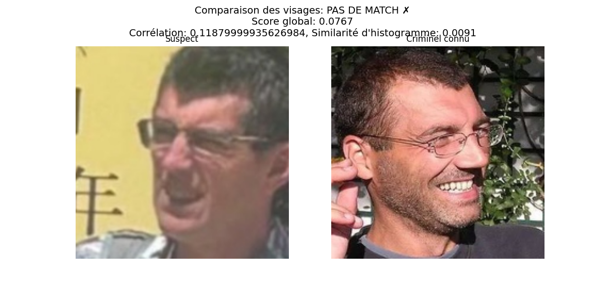

Date de l'analyse: 27/04/2025 05:18:55
Nombre total de comparaisons: 2
Nombre de correspondances trouvées: 1
✓ Meilleure correspondance: image1.JPG correspond à image2.JPG avec une similarité de 0.0767
Score de similarité: 0.0767
Corrélation: 0.11879999935626984
Similarité d'histogramme: 0.0091
| Image suspecte | Image criminelle | Score de similarité | Correspondance |
|---|---|---|---|
| image1.JPG | image2.JPG | 0.0767 | ✗ False |
| image1.JPG | image1.png | 0.0506 | ✗ False |
Cette analyse utilise des techniques de comparaison faciale pour déterminer si le suspect correspond à un individu connu:
Les résultats doivent être interprétés par un expert et ne constituent pas une preuve définitive d'identité.